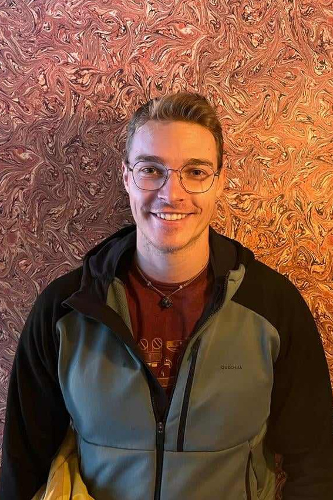

Arnaud Vadeboncoeur
I am a postdoctoral research associate in the Computational Statistics and Machine Learning Lab at the University of Cambridge, working with Prof. Mark Girolami.
My research is at the interface of statistical AI and computational mechanics for engineering applications.
I completed my PhD at Cambridge with Prof. Fehmi Cirak. You can find my thesis
here.
Research Vision
My goal is to bridge the trust gap in applying data-driven machine learning to engineering systems and scientific computing.
I develop statistical machine learning methods to build dependable models of our built environment.
Recently, I have been focusing on uncertainty quantification by learning highly informative priors
from collections of physical systems through generative models.
In particular, in
Efficient Prior Calibration From Indirect Data,
we learn optimal prior parameters of a pushforward model through a distribution matching approach. Furthermore, we concurrently learn a
surrogate model in the form of a Neural Operator through bi-level opitmization to accelerate learning and obtain a scalable algorithm.
Building on this, Efficient Deconvolution in Populational Inverse Problems
extends this methodology to solve the blind deconvolution problem, where we learn the distribution of higly correlated polluting noise.
The proposed methodologies are applied to important problems in engineering and science, namely porous medium flow, elastodynamics, and
simplified models of atmospheric dynamics.
Links & Contact
Selected Papers
- O. Deniz Akyildiz, Mark Girolami, Andrew M. Stuart, Arnaud Vadeboncoeur*,
Efficient Prior Calibration From Indirect Data,
SIAM Journal on Scientific Computing (2025), arxiv and Code.
- Alex Glyn-Davies♯, Arnaud Vadeboncoeur*♯, O. Deniz Akyildiz, Ieva Kazlauskaite and Mark Girolami,
A Primer on Variational Inference for Physics-Informed Deep Generative Modelling,
Philosophical Transactions of the Royal Society A, (2025).
-
Connor Duffin, Alex Glyn-Davies, Arnaud Vadeboncoeur, and Mark Girolami,
The Statistical Finite Element Method: A Theoretical Foundation for Digital Twins, (2025, Accepted: Quality Engineering).
- Pengyu Zhang, Connor Duffin, Alex Glyn-Davies, Arnaud Vadeboncoeur, and Mark Girolami, Probabilistic
Super-Resolution for High-Fidelity Physical System Simulations with Uncertainty Quantification,
(2025, Accepted: 11th International Operational Modal Analysis Conference (IOMAC)).
- Arnaud Vadeboncoeur*, O. Deniz Akyildiz, Ieva Kazlauskaite, Mark Girolami, Fehmi Cirak,
Deep Probabilistic Models for Forward and Inverse Problems in Parametric PDEs,
Journal of Computational Physics, (2023),
Code.
- Arnaud Vadeboncoeur*, Ieva Kazlauskaite, Yanni Papandreou, Fehmi Cirak, Mark Girolami, O. Deniz Akyildiz
Random Grid Neural Processes for Parametric Partial Differential Equations, ICML, (2023),
Code.
- Wesam Njeem, Arnaud Vadeboncoeur, Beatriz Martı́n-Pérez, Ahmad Jrade, Hassan Aoude,
Experimental and Analytical Investigation into the Effect of Corrosion on the Flexural Response of Reinforced
Concrete Beams Canadian Society for Civil Engineering Conference Proceedings (2019).
Preprints
* Corresponding author ♯ Equal contribution